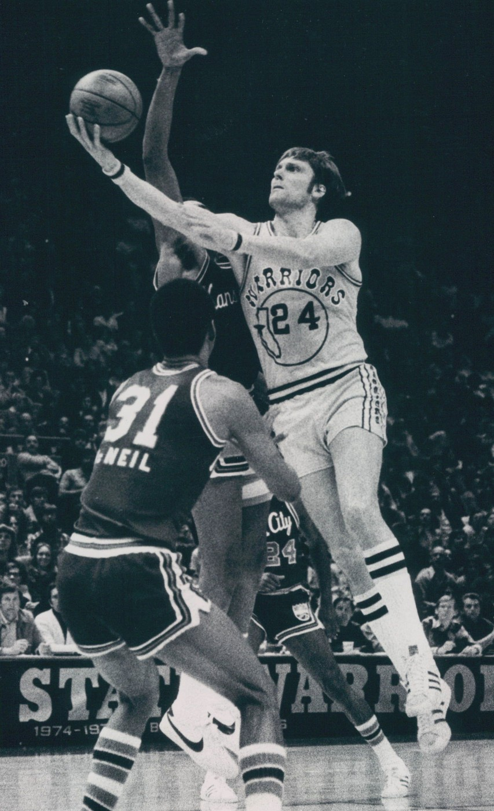
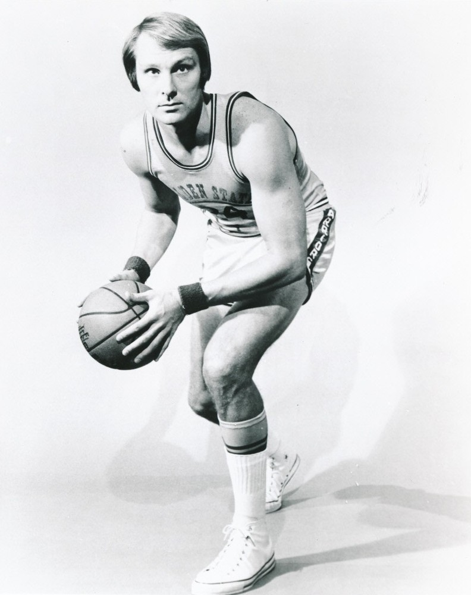
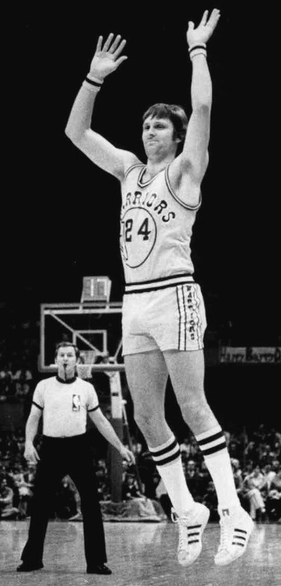
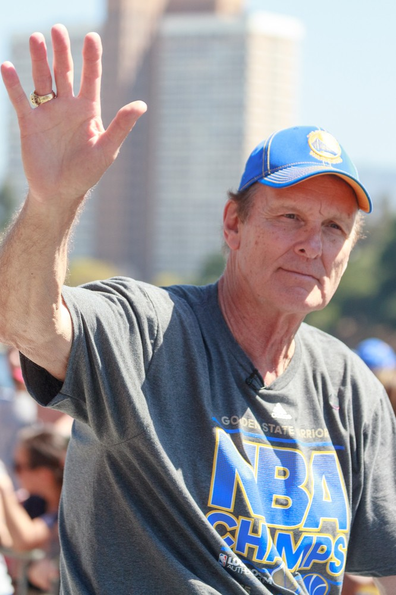
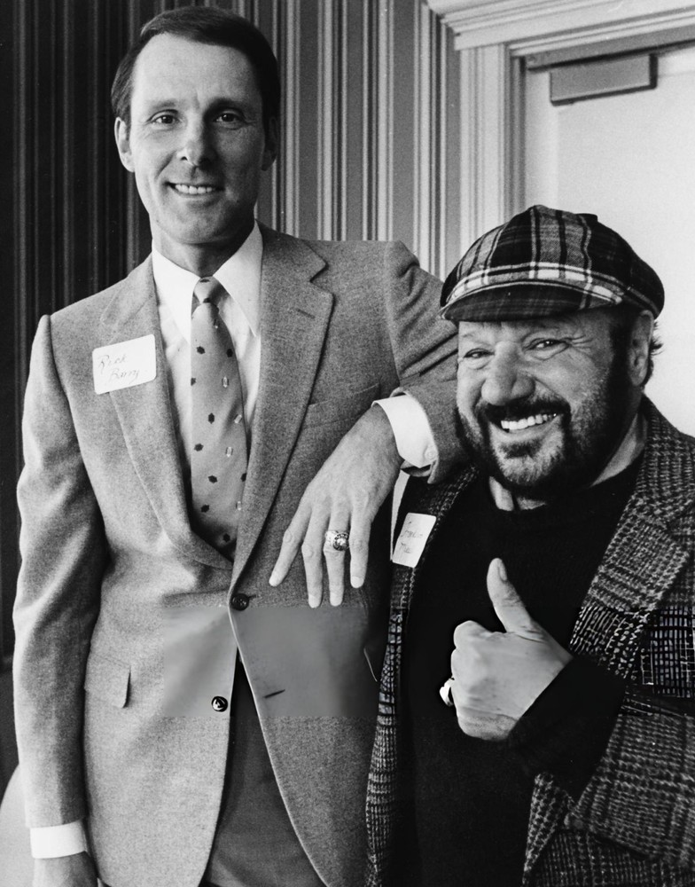

Rick Barry
He shot free throws underhanded, said exactly what he thought, and dragged an underdog Warriors team to the 1975 title anyway.
The Rick Barry Story
Every Warriors fan who came up before Steph had one name for the greatest player the franchise ever had out here, and it was Rick Barry. He scored from everywhere, he passed like a guard, and he shot his free throws underhanded like nobody else in the league would dare.
He was born in Elizabeth, New Jersey, on March 28, 1944, and grew up in Roselle Park. His father coached him, and his favorite athlete was Willie Mays. He wore 24 for Mays his whole career. At the University of Miami he led the country at 37.4 points a game as a senior.
The San Francisco Warriors took him second overall in 1965. He averaged 25.7 points and 10.6 rebounds as a rookie, won Rookie of the Year, and made first team All NBA. Bill King called him the Miami Greyhound.
His second year was ridiculous. He scored 2,775 points and led the league at 35.6 a game, the first time since 1959 that the scoring title didn't belong to Wilt Chamberlain. He was MVP of the All Star Game, played right here in the Bay Area, with 38 points. Then he took us to the Finals against Wilt's 76ers, poured in 55 in a Game 3 win, and lost in six.
Then he left. He signed with Bruce Hale, his college coach and father in law, and the ABA's Oakland Oaks, and the courts made him sit out 1967/68 because of the reserve clause in his Warriors contract. He spent that year on the Oaks broadcasts instead. He was the first American pro athlete to take a major league to court over it, two years before Curt Flood.
When he finally played for the Oaks in 1968/69 he led the ABA at 34.0 a game before tearing up his left knee in December. The Oaks won the ABA title that spring without him on the floor. The team moved to Washington, then Virginia, and Barry wound up with the New York Nets, where he won two more scoring titles and reached the 1972 ABA Finals.
In 1972 a court sent him back to the Warriors. He came home about 20 pounds heavier and a different player, shooting less and passing more. On March 26, 1974, he dropped 64 points on Portland, the best night of his career.
Then came 1974/75. His teammates voted him captain. He averaged 30.6 points, led the league in free throw percentage at .904 and steals at 2.9 a game, and was the only forward in the top ten in assists. Al Attles ran a ten man rotation around him, with Jamaal Wilkes, then Keith, winning Rookie of the Year.
Nobody thought the Warriors had a chance. They survived Chicago in seven, then swept the 60 win Washington Bullets in the Finals, with the home games moved to the Cow Palace because the Oakland arena was booked. Barry averaged 29.5 points and was Finals MVP.
He stayed through 1977/78, then signed with Houston, where he became a point forward and dished out a career high 502 assists. He retired in 1980 with a .900 NBA free throw percentage, the best in league history at the time, and 25,279 points between the two leagues.
The Hall of Fame took him in 1987. The Warriors retired number 24 on March 18, 1988. The NBA named him to its 50th and 75th anniversary teams. He's still the only player ever to lead the NCAA, ABA and NBA in scoring, and three of his sons, Jon, Brent and Drew, played in the NBA.
What He Meant to Us
I'll admit it. Rick Barry is the guy older Warriors fans bring up when somebody gets a little too confident about who the greatest Warrior ever is. And they've got a point. Before the dynasty, before Run TMC, he was the whole franchise.
What gets me is 1975. That team had no business winning. Washington won 60 games. We had Barry, a rookie named Keith Wilkes, and a bunch of guys who knew their roles. They couldn't even get their own building for the Finals and had to play at the Cow Palace. Then they swept. Swept! Barry was the reason, every night.
He wasn't easy to love, and he'd be the first to tell you. He said he didn't have a lot of tact, and his own teammates told the papers he could start World War III at the U.N. He jumped to the ABA, he fought everybody in court, he griped at refs. But when he came back to us in 1972 he was a better player, a passer, a captain.
And the free throws. Granny shots, people called them, and he made 90 percent of them. His dad told him they can't make fun of you if you're making them. That's the most Rick Barry sentence ever.
Number 24 is up there for a reason. It's been more than fifty years since the Cow Palace, and he still feels like the standard.
In Pictures




Why He Was Clutch
Barry's whole career was a guy who wanted the ball when it mattered and didn't care who knew it. In the 1967 Finals, against a 76ers team people still call one of the best ever, he scored 30 or more in every game, averaged 40.8, and put up 55 in Game 3. His Finals career average of 36.3 points is still the highest in NBA history.
In 1975 he did it with less help than any champion should have. Facing elimination in Game 6 of the West finals at Chicago, he scored 36. In the two home games of the Finals at the Cow Palace he scored 74 points, including 36 in a one point win in Game 2.
And he never missed when it was free. Six NBA free throw titles and a .900 career mark, shot underhanded, under pressure, with the whole building watching. Late in a close game, you wanted the ball in his hands or you wanted him at the line. Either way, you knew.
Clutch Moments
- 1967 All Star Game
MVP in front of the home crowd
The 1967 All Star Game was played in the Bay Area, and Barry, in just his second season, scored 38 points and was named the game's MVP. That spring he also won the scoring title at 35.6 points a game.
- April 18, 1967
55 points in the Finals
Down 2 and 0 to Wilt Chamberlain's 76ers, the Warriors came home for Game 3 and Barry scored 55 points on 48 shots, 22 of them makes, in a 130 to 124 win. He also scored 43 and 44 in other games of the series and averaged 40.8 for the Finals.
- March 26, 1974
64 on Portland
Barry had 19 at the half against the Blazers, then hit 21 field goals in the second half for 45 more. He finished with a career high 64 points and 10 rebounds in a 143 to 120 win, at the time only the third player ever to score more than 63 in a game.
- 1975 West finals, Game 6
Saving the season in Chicago
The Warriors trailed the Bulls 3 games to 2 and had to win in Chicago. Barry scored 36 to force Game 7, and the Warriors won that one 83 to 79 to reach the Finals.
- May 20, 1975
36 at the Cow Palace
With the Oakland arena booked, the Warriors played Game 2 of the Finals at the Cow Palace. Washington jumped out by 13, and Barry led the comeback with 36 points in a 92 to 91 win for a 2 and 0 lead.
- May 23, 1975
38 more in Game 3
Back at the Cow Palace, Barry poured in 38 as the Warriors beat the Bullets 109 to 101 and took a 3 and 0 lead.
- May 25, 1975
The sweep and the Finals MVP
The Warriors won Game 4 in Washington 96 to 95 and finished off the sweep for the franchise's first title since 1956. Barry averaged 29.5 points in the series and was named Finals MVP.
The Highlights
What They Said About Barry
“I was not an easy person to get along with. I didn’t have a lot of tact.”
“You could send him to the U.N., and he’d start World War III.”
“If I wanted to go to Washington, I’d run for President.”
“If I had to do it over again, I’d wait for some other fool to do it.”
“Rick may not be the kind of guy to say please, but he’s in it to win.”
Career Stats
| Year | Team | G | MP | PTS | REB | AST | STL | BLK | FG% | FT% |
|---|---|---|---|---|---|---|---|---|---|---|
| 1965/66 | SFW | 80 | 37.4 | 25.7 | 10.6 | 2.2 | .439 | .862 | ||
| 1966/67 | SFW | 78 | 40.7 | 35.6 | 9.2 | 3.6 | .451 | .884 | ||
| 1968/69 | OAK | 35 | 38.9 | 34.0 | 9.4 | 3.9 | .511 | .888 | ||
| 1969/70 | WSA | 52 | 35.6 | 27.7 | 7.0 | 3.4 | .499 | .864 | ||
| 1970/71 | NYA | 59 | 42.4 | 29.4 | 6.8 | 5.0 | .469 | .890 | ||
| 1971/72 | NYA | 80 | 45.2 | 31.5 | 7.5 | 4.1 | .458 | .878 | ||
| 1972/73 | GS | 82 | 37.5 | 22.3 | 8.9 | 4.9 | .452 | .902 | ||
| 1973/74 | GS | 80 | 36.5 | 25.1 | 6.8 | 6.1 | 2.1 | 0.5 | .456 | .899 |
| 1974/75 | GS | 80 | 40.4 | 30.6 | 5.7 | 6.2 | 2.9 | 0.4 | .464 | .904 |
| 1975/76 | GS | 81 | 38.5 | 21.0 | 6.1 | 6.1 | 2.5 | 0.3 | .435 | .923 |
| 1976/77 | GS | 79 | 36.8 | 21.8 | 5.3 | 6.0 | 2.2 | 0.7 | .440 | .916 |
| 1977/78 | GS | 82 | 36.9 | 23.1 | 5.5 | 5.4 | 1.9 | 0.5 | .451 | .924 |
| 1978/79 | HOU | 80 | 32.1 | 13.5 | 3.5 | 6.3 | 1.2 | 0.5 | .461 | .947 |
| 1979/80 | HOU | 72 | 25.2 | 12.0 | 3.3 | 3.7 | 1.1 | 0.4 | .422 | .935 |
| Career | 1020 | 37.4 | 24.8 | 6.7 | 4.9 | 2.0 | 0.5 | .456 | .893 |
Per game averages except G. Steals and blocks weren't counted until 1973/74. Barry sat out 1967/68 by court order. OAK, WSA and NYA seasons were in the ABA. Warriors only, 642 games: 25.6 points, 7.3 rebounds, 5.1 assists. Scroll the table sideways on a phone.
Playoffs, per game
| Year | Team | G | MP | PTS | REB | AST | STL | BLK | FG% | FT% |
|---|---|---|---|---|---|---|---|---|---|---|
| 1966/67 | SFW | 15 | 40.9 | 34.7 | 7.5 | 3.9 | .403 | .809 | ||
| 1969/70 | WSA | 7 | 43.1 | 40.1 | 10.0 | 3.3 | .532 | .912 | ||
| 1970/71 | NYA | 6 | 47.8 | 33.7 | 11.7 | 4.0 | .519 | .814 | ||
| 1971/72 | NYA | 18 | 41.6 | 30.8 | 6.5 | 3.8 | .473 | .856 | ||
| 1972/73 | GS | 11 | 26.5 | 16.4 | 4.9 | 2.2 | .396 | .909 | ||
| 1974/75 | GS | 17 | 42.7 | 28.2 | 5.5 | 6.1 | 2.9 | 0.9 | .444 | .918 |
| 1975/76 | GS | 13 | 40.9 | 24.0 | 6.5 | 6.5 | 2.9 | 1.1 | .436 | .882 |
| 1976/77 | GS | 10 | 41.5 | 28.4 | 5.9 | 4.7 | 1.7 | 0.7 | .466 | .909 |
| 1978/79 | HOU | 2 | 32.5 | 12.0 | 4.0 | 4.5 | 0.0 | 1.0 | .320 | 1.000 |
| 1979/80 | HOU | 6 | 13.2 | 5.5 | 1.0 | 2.5 | 0.2 | 0.2 | .364 | 1.000 |
| Career | 105 | 38.7 | 27.3 | 6.4 | 4.3 | 2.2 | 0.8 | .448 | .870 |